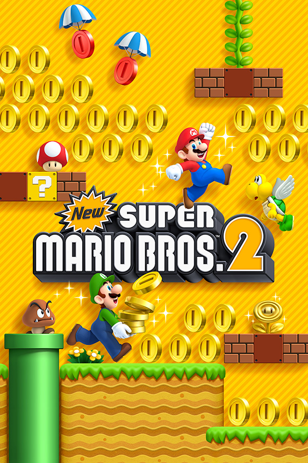

|  | |
| Playtime | Not Played |
| Last Activity | Never |
| Added | 4/29/2025 4:45:40 |
| Modified | 4/29/2025 23:43:14 |
| Completion Status | Not Played |
| Library | Playnite |
| Source | |
| Platform | Nintendo 3DS |
| Release Date | 7/28/2012 |
| Community Score | |
| Critic Score | 78 |
| User Score | |
| Genre | Platform |
| Developer | Nintendo EAD |
| Publisher | Nintendo |
| Feature | Multiplayer Single Player |
| Links | Wikipedia Official website Official Japanese website |
| Tag | [People] artist: Masaaki Ishikawa [People] composer: Kenta Nagata [People] director: Yusuke Amano [People] producer: Hiroyuki Kimura [People] producer: Takashi Tezuka [People] programmer: Kenji Higashiyama |
New Super Mario Bros. 2 is a 2012 platform game developed and published by Nintendo for the Nintendo 3DS. It is the third installment in the New Super Mario Bros. series, following 2009's New Super Mario Bros. Wii, and is a direct sequel to the original New Super Mario Bros. released in 2006 for the Nintendo DS. It is the first Nintendo-published game to be released simultaneously in both downloadable and physical forms.
New Super Mario Bros. 2's plot is similar to its predecessors, focusing on Mario and Luigi's efforts to rescue Princess Peach from Bowser and the Koopalings. It has a heavier emphasis on coin-collecting than other Super Mario games, with multiple unique items dedicated to producing large numbers of coins. New Super Mario Bros. 2 features nine worlds that consist of six main worlds and three special worlds. Those worlds total 81 levels, many of which have multiple exits to unlock more areas in the game to play and explore. The game also features a specialized mode called "Coin Rush", which focuses exclusively on quickly completing a series of stages while collecting as many coins as possible. Additional Coin Rush stages were made available for purchase as downloadable content shortly after the game's release.
New Super Mario Bros. 2 received generally positive reviews, with critics praising its level design, gameplay, and graphics, but criticizing its low difficulty, lack of innovation, and strong similarity to the earlier New Super Mario Bros. games due to its reuse of various assets from prior games and recycled soundtrack from New Super Mario Bros. Wii. New Super Mario Bros. 2 is the fifth best-selling game for the Nintendo 3DS, with 13.41 million copies sold worldwide as of September 30, 2022. A follow-up to the game and a sequel to New Super Mario Bros. Wii, titled New Super Mario Bros. U, was released as a launch title for the Wii U on November 18, 2012.
Like the previous games in the New Super Mario Bros. series, New Super Mario Bros. and New Super Mario Bros. Wii, New Super Mario Bros. 2 is a 2D platformer, and some of the characters and objects in the game are 3D polygonal renderings on 2D backgrounds. This results in a 2.5D effect (also seen previously in the first New Super Mario Bros. game) that visually simulates 3D graphics. New Super Mario Bros. 2 continues the style of gameplay from the first New Super Mario Bros. game, featuring side-scrolling platform action as Mario or Luigi attempts to rescue Princess Peach from Bowser and the Koopalings. Power-ups include the Mini Mushroom and Mega Mushroom returning from the first game, and the Super Leaf from Super Mario Bros. 3, which allows the player to tail-whip enemies or to fly. Similarly to Super Mario 3D Land, an Invincibility Leaf will appear if the player loses at least five lives during any non-cannon levels. The Invincibility Leaf grants both the abilities of the Super Leaf and invincibility until the end of the stage. The story has both single-player and multiplayer options; two players, each with their own Nintendo 3DS and copy of the game, play together simultaneously as Mario and Luigi. Like the previous games, players can collect three Star Coins hidden throughout each level, which can be spent to unlock new areas on the overworld map.
New Super Mario Bros. 2 has a strong emphasis on collecting gold coins, in which the emphasis features various new items that are dedicated to producing large numbers of coins. These include Gold Flowers that can turn blocks into coins, rings that can temporarily turn enemies gold, and a mask-esque block that produces coins as Mario (or Luigi) runs. All coins collected are totaled on the title screen and the overworld map. If the player has SpotPass enabled in the game, this total can be uploaded to the Nintendo Network and the player will be updated with the grand total of all coins collected by all players worldwide.
In addition to the main game, which consists of 81 levels, New Super Mario Bros. 2 features a Coin Rush mode, made accessible after the player completes the first world in the game. In Coin Rush, the player must play through three randomly chosen levels collecting as many coins as possible. Both Star Coins and Moon Coins add several coins to the player's running total in this mode. However, the player is given only one life and each level gives a time limit of 50 or 100 seconds. The 1-up Mushrooms are replaced by Gold Mushrooms in this mode. If checkpoint flags have been passed or timers have been collected, the time limit will be extended. Getting to the top of the ending flag causes the number of coins gained in a level to double. If the player completes the run, the accumulated total of coins that are collected can be saved as the player's high score, which can be transmitted to and challenged by other players via StreetPass. Additional course packs can be purchased as downloadable content.
In 2010, Shigeru Miyamoto stated that both side-scrolling and 3D Mario games were in development for the Nintendo 3DS. Following the release of Super Mario 3D Land, the untitled 2D Super Mario game was announced during a meeting of investors by the president of Nintendo, Satoru Iwata, in late January 2012. He described it as a "totally new side-scrolling action Super Mario in 2D as a key title for the Nintendo 3DS". Nintendo planned to release the game "in the next fiscal year", which started in April 2012 and ended in March 2013. It was subsequently announced to be released on August 17, 2012 in Europe, and August 19, 2012 in North America.
The game was announced as New Super Mario Bros. 2, a direct sequel to 2006's New Super Mario Bros., during a Nintendo Direct conference on April 21, 2012, with tentative release dates for Japan, North America, Europe, and Australia in August 2012. Nintendo stated New Super Mario Bros. 2 was created "specifically as a pick-up-and-play experience", accommodating players of all skill levels. It was the first retail 3DS game to also be released as a download on the Nintendo eShop on the day of its release. The first three packs of courses for Coin Rush mode were released as downloadable content in Japan and Europe on October 2, 2012, followed by North America on October 4, 2012. Six more packs were released. The second and third set of two packs was released worldwide on October 25, 2012 and December 5, 2012 respectively and the last set of two was released on December 20, 2012 in North America and Europe and on December 21, 2012 in Japan. The final "Gold Classics Pack" was released on November 27, 2012 to celebrate the 300 billion coins milestone and was available to download for free until the end of January 2013. In 2014, an updated version featuring all the DLC pre-installed was released, New Super Mario Bros. 2: Gold Edition. This version was available exclusively at Walmart for Black Friday 2014 as a digital copy pre-installed on the limited edition New Super Mario Bros. 2: Gold Edition Nintendo 3DS XL bundle for $399.
The game was not developed by the same team in charge of the first two New Super Mario Bros. games headed by Shigeyuki Asuke, as they were busy working on New Super Mario Bros. U. Instead, it was made by a newly assembled team composed of newer employees, though Mario developer Takashi Tezuka was involved in both games as producer, it was meant to teach newer employees about the development of Super Mario games.
The game's soundtrack was composed by Mario Kart veteran Kenta Nagata, though most of the soundtrack is recycled from New Super Mario Bros. Wii with minor alterations, which was composed by Shiho Fujii, Ryo Nagamatsu, and Kenta Nagata.
New Super Mario Bros. 2 has received generally positive reviews. It holds an aggregated score of 78.40% on GameRankings and 78/100 on Metacritic, it is the lowest-rated console mainline Mario game. The game was given a 36/40 by Famitsu with a 9 from each of the four reviewers. Electronic Gaming Monthly gave the game a 9/10, stating "This platforming perfection is what makes Mario games so fun, and in that regard, New Super Mario Bros. 2 definitely succeeds with its own share of secrets, collectibles, and branching pathways that can be unlocked depending on how you should advance through the game." Nintendo Life gave the game 9 out of 10 stars, saying "It's immense fun, boasts brilliant level design and offers enough repeat play appeal to keep you glued to your 3DS system for weeks."
Official Nintendo Magazine gave the game 90% out of 100, heavily criticizing the game for its 3D effects and lack of progression in the Super Mario series, summarizing that "New Super Mario Bros. 2 is the very definition of bitter-sweet, giving with one hand and then taking away with the other. By default it's the best side-scrolling platformer on the 3DS and yes, it's even better than the original New Super Mario Bros. But that came out six years ago now, and in that time we'd really expected the series to have progressed a little further than just a 3D effect and Coin Rush mode."
Tom Sykes of Nintendo Gamer gave the game 80 out of 100, praising the new features, but criticizing it for being too similar to its predecessors. "This is a great 2D platformer, but it's lacking the vital creative spark that turns a great 2D platformer into a classic one. We've come to expect more than straight sequels from mainline Mario games, and until this generation we hadn't truly been offered one. That's a definite disappointment, but on the upside, more NSMB is hardly a bad thing. With its obsessive focus on coin collecting, NSMB2 does a few things differently to its predecessor, but not enough to stand tall as its own game. It's a fine companion piece to the original DS game, however, and one that's likely to reside in your 3DS for quite some time."
As of 30 September 2022, 13.41 million copies of New Super Mario Bros. 2 have been sold worldwide, making it the fifth best-selling game for the system.
New Super Mario Bros. 2 was nominated for "Best Handheld Game" at Spike's 10th Annual Video Game Awards.
A stage based on New Super Mario Bros. 2 appears in Super Smash Bros. for Nintendo 3DS and Super Smash Bros. Ultimate, titled "Golden Plains". If a player collects 100 coins, the character will turn golden and gain both increased attack power and flinch resistance.
Mario's transformation when he touches a Gold Flower, Gold Mario, appears in Mario Kart 8 Deluxe and Mario Kart Tour as an unlockable character. An Amiibo figure was released based on this transformation.